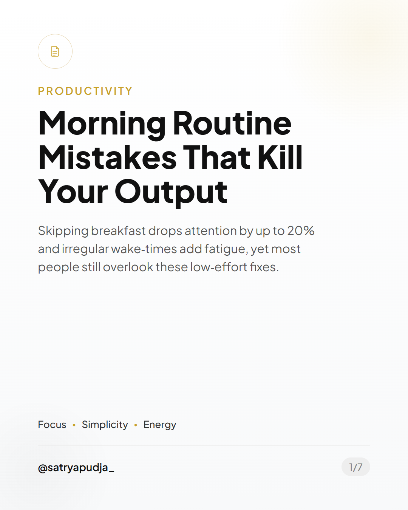

Tips Content
Data dan fakta dalam lima poin tajam.
PUBLIC DEMO / 7 SLIDES / PNG READY
Ketik ide apa saja. Pipeline ini meriset, menulis, dan merender carousel Instagram siap posting dengan struktur konten yang jelas.



01 / VISUAL SYSTEM
Bukan satu template yang dipaksa untuk semua topik. Pilih bahasa visual yang paling tepat untuk pesanmu.
Data dan fakta dalam lima poin tajam.
Breakdown teknis dengan hierarki editorial.
Quote card untuk claim yang kuat.
Tip praktis dengan kanvas putih dan coral.

Magazine premium untuk topik reflektif.
Growth tips dengan energi dan hook yang kuat.
02 / GENERATED OUTPUT
Semua strip di bawah ini dibuat oleh pipeline demo: tujuh slide dari satu topik.
TIPS CONTENT / COFFEE GRINDER
01—07CODE CONTENT / BUN VS NODE.JS
01—07EDITORIAL CONTENT / MORNING ROUTINES
01—0703 / THE PIPELINE
Mulai dari satu ide. Topik bebas, selama aman dan punya sesuatu yang berguna untuk dibagikan.
Pipeline mencari sumber, fakta, dan sudut pandang yang membuat carousel tidak berhenti di definisi generik.
Hook, lima slide isi, dan closing disusun dengan struktur yang sesuai template.
Output akhir berupa gambar 1080×1350 yang bisa langsung kamu review dan posting.
04 / YOUR TURN
Coba demo publik dan lihat bagaimana satu ide berubah menjadi tujuh slide yang siap kamu review.
Coba sekarang — gratis5 percobaan gratis per hari · hasil dikirim ke email